|
A
polmica abertura de Enterprise
 Enterprise pode no ter sado uma srie to diferente de suas predecessoras como queriam os produtores, mas se h um aspecto em que o programa inovou foi no tema de abertura. Tanto o uso de uma msica
popular e cantada quanto a fuga do tradicional tema de ter a nave voando pelo espao foram fatores que marcaram claramente a vontade de ser diferente. Enterprise pode no ter sado uma srie to diferente de suas predecessoras como queriam os produtores, mas se h um aspecto em que o programa inovou foi no tema de abertura. Tanto o uso de uma msica
popular e cantada quanto a fuga do tradicional tema de ter a nave voando pelo espao foram fatores que marcaram claramente a vontade de ser diferente.
Os fs, que cobram tanto a audcia e a inovao por parte dos produtores, foram os que ironicamente mais reclamaram. Segundo eles, a montagem e, em grau infinitamente mais elevado, a msica no transmitem o senso e a tradio normalmente associadas ao nome
Jornada nas Estrelas. Houve abaixo-assinados at para a mudana da msica e sua substituio por um tema orquestrado, mas Rick Berman e Brannon Braga foram inflexveis.
"Eu gosto da cano. Eu aceito total responsabilidade pela cano", disse Berman revista "Star Trek Magazine". "Eu acho que a sequncia dos ttulos de abertura precisava de mudanas. Fomos a uma companhia maravilhosa chamada Montgomery/Cobb e trabalhamos com eles por meses juntando as montagens que fazem o fundo da sequncia do ttulo. Em nosso esforo contnuo de fazer coisas diferentes e fazer de
Enterprise uma srie mais contempornea, a idia de fazer uma cano com vocal era algo que eu achei que seria bem legal."
Segundo o produtor-executivo, a msica de Diane Warren, "Faith of the Heart", no foi a primeira coisa que eles pensaram. "Andamos por muitas canes diferentes. Fomos na direo de Lyle Lovett. Fomos na direo de Randy Newman. Finalmente, eu conheci a compositora de nossa cano, Diane Warren, e ela uma compositora memorvel que fez alguns materiais maravilhosos. Ela concordou em escrever a cano para ns."
E Warren cumpriu a promessa -- mais ou menos. "Ela me ligou um dia e disse, 'Preciso cantar algo para voc'. E comeou a cantar essa cano", conta Berman. "Era quase exatamente o que procurvamos, mas acabou que era uma msica que ela j havia escrito. Fizemos algumas pequenas mudanas e ela ficou perfeita para os nossos propsitos."
A msica composta por Warren (uma compositora bastante prestigiada no show business, tendo at disputado o Oscar pelo tema do filme "Pearl Harbor" no ano passado) havia sido originalmente concebida para o filme "Patch Adams", de Robin Williams (embora s tenha ouvido a msica quem ficou assistindo ao rolar dos crditos ao final da pelcula). Na ocasio, ela havia sido interpretada por Rod Stewart.
Entretanto, no era inteno de Rick Berman e Brannon Braga reutilizar a gravao original de Stewart -- at porque algumas pequenas mudanas na letra foram feitas para ficar melhor na abertura de
Enterprise (a msica foi at "rebatizada" de "Where My Heart Will Take Me"). "Ento era hora de procurar um cantor, e esse foi um grande e longo processo", relembra Berman. A misso acabou ficando com uma estrela ascendente da msica britnica, o cantor de pera Russell Watson.
"Diane gostava muito de Watson, que uma grande estrela na Europa e especialmente no Reino Unido", diz Berman. "Ns o encontramos e ouvimos algumas verses pop de materiais clssicos que ele faz. Marcamos uma sesso de gravao, primeiro em Nova York, e ento houve alguma mixagem final e umas coisinhas que foram feitas na Inglaterra."
Watson, que era um f de Jornada nas Estrelas de longa data, agarrou a chance assim que a viu. E, embora no tenha apreciado muito a reao negativa dos fs, aceitou resignado, e com otimismo, o veredicto do pblico. "No assim com tudo na vida?", ele disse ao site Zap2It. "Algo novo acontece, e as pessoas no esto muito certas disso. Mas elas vo se acostumar. Quando elas estiverem vendo o vigsimo episdio, estaro pensando, 'Bem, no to ruim assim afinal'."
O cantor britnico relembra que foi Diane Warren quem o trouxe a bordo. "Diane uma f minha", disse. "Ela j tinha escrito algo para o meu segundo lbum e perguntou se eu gostaria de me envolver com a nova produo de
Jornada nas Estrelas." Ele topou na hora, e a msica acabou se tornando a ltima faixa de seu segundo disco, "Encore".
Os fs podem at preferir a orquestra de Jerry Goldsmith, ou simplesmente odiar os tons de Watson ou a melodia com cara de anos 80 composta por Diane Warren, mas impossvel negar que a composio parece mesmo ter sido feita sob medida para sintetizar o esprito da nova srie. Confira a letra da verso que foi para a abertura:
It's been a long road,
getting from there to here.
It's been a long time,
but my time is finally near.
And I will see my dream come alive at last.
I will touch the sky.
And they're not gonna hold me down no more,
no, they're not gonna change my mind.
'Cause I've got faith of the heart.
I'm going where my heart will take me.
I've got faith to believe.
I can do anything.
I've got strenght of the soul.
And no one's gonna bend or break me.
I can reach any star.
'Cause I've got faith, I've got faith, faith of the heart.
Ou, traduzindo:
Foi uma longa estrada,
vindo de l at aqui.
Foi um longo tempo,
mas minha hora finalmente se aproxima.
E eu vou ver meu sonho ganhar vida afinal.
Eu vou tocar o cu.
E eles no vo mais me segurar,
no, eles no vo me fazer mudar de idia.
Porque eu tenho f em meu corao.
Eu vou onde meu corao me leva.
Eu tenho f para acreditar.
Que posso fazer qualquer coisa.
Eu tenho fora em minha alma.
E ningum vai me torcer ou barrar.
Eu posso alcanar qualquer estrela.
Porque tenho f, tenho f, f em meu corao.
Se algum a no l, linha por linha, o drama do capito Archer em ver sua nave ser lanada, realizando o sonho de vida de seu pai, contrariando o desejo dos Vulcanos e, literalmente, tocando as estrelas, ento eu no sei mais o que pensar. Ok, a letra mais doce que fios de ovos em ceia de Natal, mas ningum pode negar que tem o seu charme, por falar to diretamente premissa bsica da srie.
Mas nada se compara realmente ao trabalho de imagens feito em cima dessa abertura. Por mais que achemos lindas as apresentaes das sries anteriores de
Jornada, precisamos admitir que nada foi to bem trabalhado e, acima de tudo, friamente calculado, como essa sequncia de imagens.
Veja como a companhia Montgomery/Cobb, responsvel pela montagem das cenas (e voc que por um momento pensou que tudo era feito dentro da sala do Rick Berman, hein?), define o trabalho: "Cenas de arquivos histricos, tomadas de efeitos visuais e imagens geradas por computador, grficos tcnicos e uma montagem de naves
Enterprise ao longo da histria destacam o conceito da srie ao apresentar esse tributo ao esprito humano de explorao e descoberta".
Que a sequncia de imagens realmente oferta aos telespectadores um tributo ao esprito humano de explorao e descoberta, no h qualquer dvida. O que muitos questionam o quanto isso estaria afinado com o conceito de
Jornada nas Estrelas e o quo competente a abertura em apresentar a srie audincia.
Aqui entra um dos maiores mitos j criados em torno dessa franquia de 36 anos de idade: a noo de que h um conceito exato e claramente definido para
Jornada nas Estrelas. Na verdade, a srie sempre atraiu as pessoas por diferentes razes, e cada produtor no comando teve sua prpria interpretao do que isso significava. Gene Roddenberry, o criador, buscou uma abordagem mais utpica. Harve Bennett optou por uma verso mais militarista. Rick Berman flexibilizou as duas abordagens, mesclando-as (temos um srie mais militarista em
Deep Space Nine, por exemplo, e duas sries de linha utpica, com
A Nova Gerao e Voyager). Enterprise trilhou uma terceira linha, que ainda no deixou clara qual ser sua marca para o conjunto da franquia: o elo contemporneo.
Todas as sries de Jornada faziam questo de mostrar o quanto estvamos adiantados nos sculos 23 e 24. A prpria existncia de Spock, um dos personagens mais celebrados da franquia, foi mantida basicamente porque Roddenberry queria lembrar aos telespectadores que aquele ambiente estava num futuro razoavelmente distante.
Enterprise segue na linha inversa. O objetivo dos produtores mostrar que a srie est muito mais prxima de ns do que as outras. E o conceito por trs da abertura reflete isso muito bem. E interessante notar como as montagens buscam um tom muito menos aleatrio do que pode parecer a princpio.
Alguns apontaram que muita coisa interessante deve ter acontecido entre nossa poca e 2151 que acaba no sendo retratada na abertura. Por exemplo, vemos uma rpida passagem do robozinho Sojourner em Marte, mas no vemos homens caminhando na superfcie de Marte, algo que certamente j teria acontecido em 2151. Vemos os pousos na Lua dos anos 1960 e 1970, mas no vemos os primeiros vos interestelares ps-inveno do motor de dobra por Zefram Cochrane. O que faz parecer que os produtores no elegeram prioridades na hora de escolher as imagens. Ao contrrio, eles elegeram e muito: e a meta central era manter a NX-01 propositalmente perto dos avanos atuais.
Com isso, eles tentam diluir o salto de imaginao e f que o telespectador precisa ter para acreditar que est vendo uma srie sobre um futuro que ele possa imaginar. Ento, o objetivo induzi-lo a crer que a NX-01 o prximo passo natural, aps a ISS (Estao Espacial Internacional), o substituto do nibus espacial e a nave de dobra de Zefram Cochrane. Rpido e rasteiro.
De novo, as pessoas podem no concordar com a edio, mas difcil dizer que a coisa no foi pensada, e bem pensada, pelos produtores.
Mas essa abertura, alm de dar uma pista audincia sobre o que Rick Berman e Brannon Braga querem com a srie, reflete tambm, ao menos vagamente, o "esprito" de
Jornada nas Estrelas? Como eu disse antes, essa no uma questo objetiva. Cada um tem sua forma de entender esse fenmeno conhecido como
Jornada nas Estrelas, e nenhuma viso melhor do que a outra. Mas a minha resposta particular um sonoro "Sim!".
"Audaciosamente indo onde nenhum homem jamais esteve", para mim, j diz tudo. Independentemente do que tenha se tornado, ou por quais temas tenha enveredado,
Jornada nas Estrelas e sempre foi sobre o esprito humano bsico de explorao. E, numa srie que invariavelmente retratou o futuro distante do homem, interessante a noo de que tambm h um pouco de
"Jornada nas Estrelas" na histria pregressa da humanidade.
Mais do que tudo, isso que a abertura diz a respeito da franquia:
Jornada nas Estrelas sempre esteve acontecendo. Est acontecendo agora. Cada misso do nibus espacial, cada novo projeto tripulado, cada visita ISS, cada nova sonda investigando os confins do Sistema Solar, cada um desses episdios mais um degrau na histria presente, passada e futura de
Jornada nas Estrelas. uma mensagem espetacular e inspiradora por si mesma, independentemente da contribuio de Jonathan Archer e companhia para o futuro da humanidade.
Claro, no uma abertura perfeita. Alis, se h um motivo para criticar, o fato de a sequncia reduzir o conceito de humanidade a praticamente um nico pas, os Estados Unidos da Amrica. incrvel que os fatos de o russo Yuri Gagarin ter sido o primeiro homem a orbitar a Terra, em 1961, e de a Unio Sovitica ter sido a primeira a lanar um satlite artificial (o Sputnik-1), em 1957, tenham sido sumariamente varridos para debaixo do tapete. Fossem outros tempos, com Guerra Fria e tudo mais, eu entenderia. Mas, neste caso, uma omisso imperdovel. At mesmo o roteirista Andr Bormanis, em entrevista recente ao
Trek Brasilis, comentou a questo: "Teria sido legal ver algo do velho programa sovitico, que forneceu tanto do mpeto para o programa espacial americano."
Mas a verdade que, se a abertura parece excessivamente patritica em favor dos EUA agora, ela j foi at pior que isso. O
Trek Brasilis teve acesso a uma verso preliminar da edio da abertura, includa numa verso no-finalizada do piloto "Broken Bow", que mostrava at mais patriotismo por parte dos produtores.
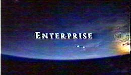 Essa verso da abertura tambm tinha algumas diferenas em sua edio e montagem, que voc pode ver ao longo das prximas fotos. A mais notvel delas a presena de uma fonte diferente para o ttulo da srie e para os letreiros. Serifada, ela parecia mais afinada ao visual "histrico" da abertura, mas menos aparentada com o estilo de
Jornada nas Estrelas.
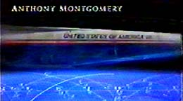 A verso preliminar foi feita antes da gravao da msica-tema por Russell Watson e contava com a verso original de Rod Stewart (voc pode puxar o vdeo completo, em formato AVI-DivX 5.02 e com 3,5MB, clicando
aqui). As primeiras montagens eram essencialmente as mesmas da verso atual, mas as alteraes comeavam depois da exibio do homem na Lua e na rbita terrestre. Um prottipo do substituto do nibus espacial da Nasa cruzava a tela, com a clara inscrio "United States of America" nele.
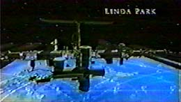 A ISS tambm estava presente nessa montagem preliminar, mas numa cena muito menos agradvel, sem aparncia de realidade, e que tambm no contava com a sequncia de montagem. A imagem esttica era acompanhada por uma Terra ao fundo, que tambm no parecia esteticamente das melhores.
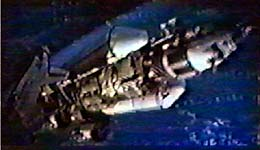 Depois disso, aparecia na tela uma outra nave desconhecida, que pelas dimenses e estilo poderia at ser a que teria levado os primeiros humanos a Marte. Essa cena foi sumariamente excluda da verso final, talvez por ser complicada demais para o pblico saber do que se tratava.
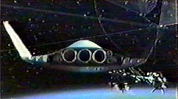 A cena final antes do aparecimento da Enterprise NX-01 contava com uma nave diferente, voando na direo de um complexo orbital aparentemente mais moderno que a ISS. Mas esse veculo claramente no possua capacidade de dobra.
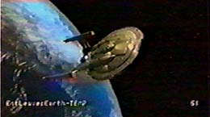 Para fechar a conta, a tomada com a Enterprise NX-01 ainda era uma sequncia de efeitos especiais provisria e incompleta, apenas para dar uma noo de qual seria o resultado final.
Na verso final, que vemos todas as semanas na televiso, essas cenas foram substitudas por outras que, em geral, propiciam melhor efeito esttico e de contedo (com direito a uma nave de dobra entre a Phoenix de Zefram Cochrane e a Enterprise e uma cidade-colnia na Lua). Entretanto, agora que voc viu as duas, pode at fazer sua avaliao pessoal.
Uma coisa que no passvel de avaliao, entretanto, a quantidade de histria humana que foi empacotada em pouco mais de um minuto na abertura da srie. A sequncia de valor inquestionvel, e gostaria de fechar esse texto com um tributo abertura, comentando todas as imagens e referncias que entraram em sua verso final. Confira.
A abertura, quadro a quadro
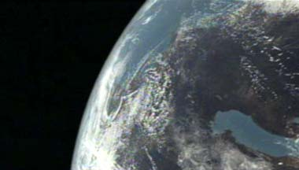
Nossa jornada comea no nico lugar possvel, a Terra.
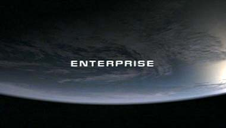
Outra viso da rbita terrestre, e a apario do ttulo: Enterprise.
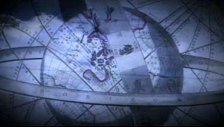
Uma transio nos leva a uma representao antiga da Terra, mas ainda rica em referncias astronmicas, como a faixa das constelaes do zodaco. Comea a viagem ao passado.
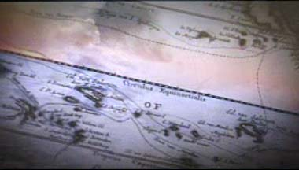
Somos levados por um mapa antigo com um zoom em pequenas ilhas, que rapidamente nos remetem ao mar -- onde a explorao do desconhecido teve incio.
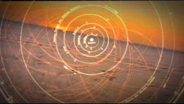
Astronomia e navegao eram praticamente atividades-irms. No incio, os desbravadores dos mares tinham como principal guia a posio das estrelas no cu. No de se admirar que, nessa volta ao passado, enquanto fazemos a transio para o mar, podemos ver um diagrama do Sistema Solar, no consagrado modelo copernicano, com o Sol ao centro.
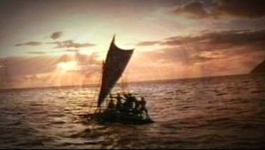
Somos ento deixados com uma pequena embarcao a vela, num aparentemente infindo oceano. De posse de razovel conhecimento astronmico e de tecnologia para navegar, podemos comear a ter sonhos maiores.
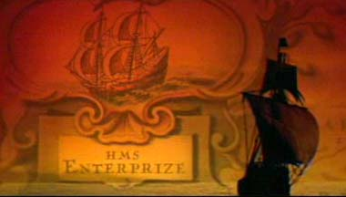
Surge uma referncia primeira embarcao a receber o nome Enterprise. Ou melhor, "Enterprize". Trata-se de um navio construdo pelos franceses, cujo nome original era L'Enterprenante. Capturado em 1705 pela HMS Triton, da Marinha Real Britnica, foi rebatizado e colocado a servio de Sua Majestade, com o nome HMS Enterprize (a grafia era flexvel na poca, permitindo "s" ou "z", mas, como se tratava de um navio capturado, ao que parece, o trocadilho com "prize", ou "prmio", pareceu ser por demais irresistvel). A embarcao serviu no Mediterrneo, mas teve vida curta sob o comando ingls, sendo afundada em outubro de 1707. De toda forma, iniciou uma longa carreira de navios chamados Enterprise (a partir do segundo, foi adotada a grafia com "s"), tanto na Marinha Britnica como na dos EUA.
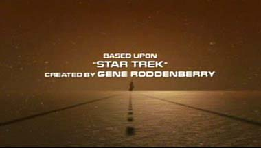
As primeiras Enterprises pavimentaram o caminho para o futuro. Numa sntese impressionante do esprito de
Jornada nas Estrelas e numa tocante homenagem tocante a seu criador, Gene Roddenberry, temos uma mistura de elementos em que um navio antigo (presumivelmente, uma Enterprise) aparece no horizonte, trilhando uma auto-estrada por sobre o mar, indo aonde o oceano toca as estrelas. a estrada para o futuro, "baseada em
'Jornada nas Estrelas', criada por Gene Roddenberry".
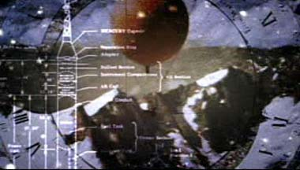
Conquistada a superfcie dos oceanos, a transio feita para o ar. Enquanto um antigo balo sobrevoa as montanhas, comeamos a observar uma mistura de elementos antigos e modernos, incluindo um diagrama de um foguete.
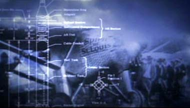
Dos bales, saltamos para os avies. O diagrama do imenso foguete continua a ilustrar a evoluo da tecnologia enquanto temos uma viso histrica: uma filmagem do Ryan NYP "Spirit of St. Louis", avio que em 21 de maio de 1927 ajudou o piloto americano Charles A. Lindbergh a fazer o primeiro vo transatlntico ininterrupto. Ele decolou de Long Island, em Nova York, e pousou em Paris, Frana, 33 horas e 30 minutos depois. Graas ao vo, Lindbergh ganhou o prmio de US$ 25 mil oferecido pelo hoteleiro Raymond Orteig ao primeiro aviador a atravessar o oceano. O vo consolidou o esprito da aviao e abriu as portas para sua popularizao em escala comercial. Hoje, o avio est no Museu Nacional do Ar e do Espao, da Smithsonian Institution.
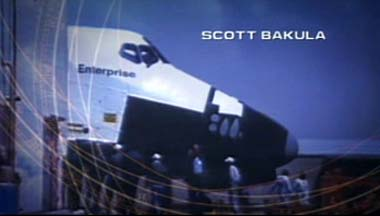
Na sequncia, a transio da tradio naval para a espacial, com o primeiro nibus espacial da Nasa, o Enterprise. A nave foi mostrada pela primeira vez em 1976, mas s serviu a testes na atmosfera da Terra. Seu nome original seria Constitution, mas uma campanha de cartas dos fs de
Jornada nas Estrelas fez com que a agncia espacial americana trocasse por Enterprise. O primeiro nibus espacial a efetivamente dar uma volta na Terra foi o Columbia, em 1981.
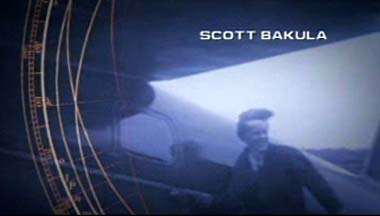
Como o nibus espacial Enterprise nunca foi ao espao, continuamos no campo da aeronutica. Desta vez, com a primeira grande herona da aviao, Amelia Earhart. Esta americana que se tornou inspirao de muitas mulheres por seu esprito indomvel bateu diversos recordes pilotando avies, tornando-se inclusive a primeira mulher a atravessar o Atlntico, em 1928. Muitos consideravam-na a sra. Lindbergh. Amelia teve uma morte trgica em 1937, com seu co-piloto Fred Noonan, quando seu avio se chocou contra o oceano Pacfico. Seus corpos ou a carcaa da aeronave nunca foram recuperados, dando origem a toda sorte de mitos (o tema inclusive j foi abordado em
Voyager, no episdio "The
37's").
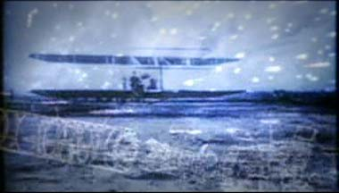
Seguindo com a viagem no tempo, desta vez para trs, vemos um dos vos pioneiros dos irmos Orville e Wilbur Wright. No se trata da primeira decolagem de seu Flyer, que ocorreu em 1903 (trs anos antes do primeiro vo pblico e registrado da histria, feito pelo brasileiro Alberto Santos Dumont, em Paris, 1906), mas foi feita em sigilo e longe das cmeras. Alm de ter sido o primeiro, o avio dos Wright acabou sendo a maior inspirao em termos de design para os veculos que viriam depois (o prprio Santos Dumont abandonou o conceito bsico de seu 14-Bis aps alguns vos, concluindo que estava num beco sem sada evolutivo).
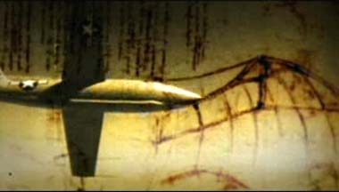
O contraste de passado remoto e passado recente continua -- agora simultaneamente. Enquanto vemos o jato X-1, mquina que impulsionou o primeiro homem alm da velocidade do som, em 1947, tambm vislumbramos alguns esquemas renascentistas desenhados por Leonardo da Vinci, na tentativa de projetar uma mquina voadora.
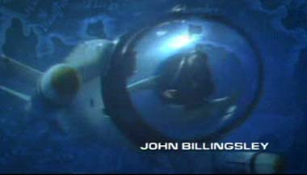
O que nos leva mais esquizofrnica parte da edio da abertura: entre vrias sequncias de aviao, um veculo submarino moderno atravessa a tela. Embora a estrutura da sonda lembre um pouco os designs de Jornada, por conta de suas duas "naceles", poderamos ter ficado sem essa estranha imagem na edio final.
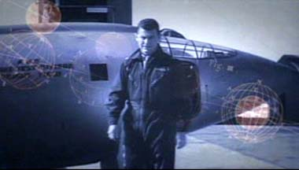
Como se aquele veculo marinho no passasse de uma alucinao, voltamos a ver o X-1, desta vez no cho, com seu clebre piloto caminhando frente: o lendrio general Charles "Chuck" Yeager. Considerado um dos mais destemidos pilotos da histria da Fora Area americana, Yeager impulsionou o X-1 para alm da barreira do som em 14 de outubro de 1947.
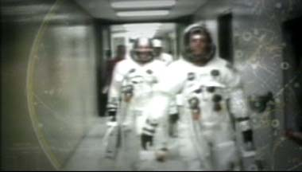
Mas hora de ir ao espao. Enquanto um diagrama moderno da posio das estrelas aparece, sutil, ao fundo, vemos alguns astronautas do programa Apollo caminhando para a nave, j vestidos em pesados trajes espaciais.
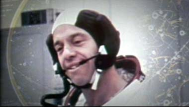
Na sequncia, um zoom em um dos cones do programa espacial da Nasa: Alan Sheppard. Alm de ter sido o primeiro americano a fazer um vo suborbital, em 1961 (mesmo ano em que Yuri Gagarin, pela Unio Sovitica, deu sua volta em torno da Terra), a bordo de uma cpsula Mercury, Sheppard foi um dos poucos felizardos que teve a chance de andar sobre a Lua. A imagem anterior ao lanamento da Apollo 14, que levou ele e mais dois astronautas para a rbita lunar. Encarnando o esprito desbravador e aventureiro, Sheppard levou para a nave, s escondidas, uma bola de golfe, o que permitiu que ele se tornasse o primeiro homem a jogar golfe na Lua. A bola deve estar l at hoje.
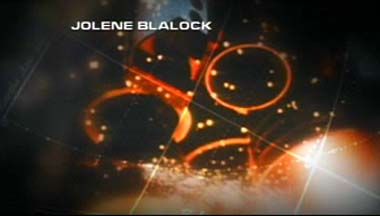
Em seguida, vemos o incio do acionamento dos motores antes da decolagem de um nibus espacial da Nasa, um tecnologia posta em uso no incio dos anos 1980.
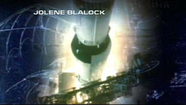
Saltando para trs no tempo (e de volta poca de Sheppard), vemos um Saturno-5, foguete responsvel pelo impulso inicial que permitiu a ida do homem Lua, se desprendendo da base e iniciando sua espetacular decolagem.
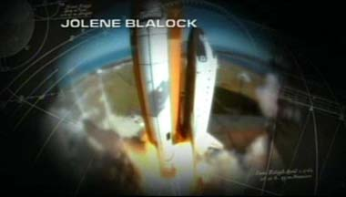
E ento voltamos ao final do sculo 20, com a continuao da decolagem de um nibus espacial.
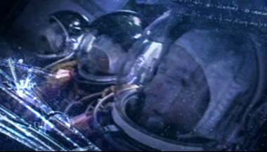
E a mesma cena, vista do lado de dentro da nave, com uma cmera se concentrando num trio de astronautas (de uma tripulao de sete) durante a decolagem. possvel ver toda a tenso e a violncia com que o nibus espacial se desprega do cho, tremendo um bocado enquanto os poderosos motores queimam hidrognio e oxignio lquidos para impulsionar o veculo macio para a rbita terrestre.
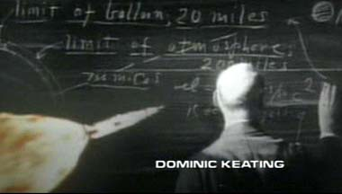
Enquanto vemos um foguete singrando o ar rumo ao espao, temos um pequeno vislumbre de quem iniciou a revoluo: Robert Hutchings Goddard. Este americano o responsvel pela criao terica e prtica dos foguetes, j sendo visionrio em sua aplicao em explorao espacial. Data de 1912 seu primeiro trabalho terico (ele era fsico) a respeito do uso prtico de foguetes para ir alm da alta atmosfera e, em 1926, Goddard demonstrou o primeiro foguete movido a propulso lquida. Tambm foi deve a idia dos foguetes de mltiplos estgios (recebeu a patente nos EUA em 1914). Por conta de seus feitos, Goddard deu nome a um dos centros da Nasa, quando em 1959 foi fundado em Greenbelt, Maryland, o Centro de Vo Espacial Goddard (Goddard Space Flight Center).
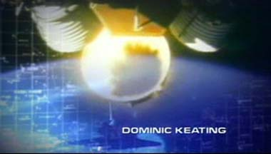
J no espao, nas proximidades da Terra, vemos um foguete desprendendo mais um de seus estgios, para acionar o seguinte e seguir viagem. a inveno de Goddard tomando forma e levando o homem alm da atmosfera terrestre.
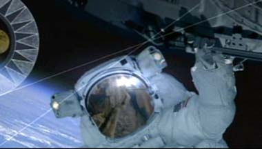
o que vemos na sequncia, em uma tomada bastante atual que mostra o estado da arte em termos de trajes espaciais para os astronautas americanos. Apesar de tudo aquilo existir, aquele homem em rbita da Terra uma pea publicitria; a imagem no faz parte de nenhuma misso real empreendida pela Nasa.
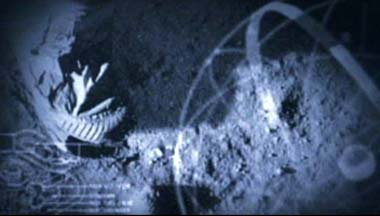
A conquista do espao continua, enquanto o homem d seus primeiros passos na superfcie lunar. Seis alunissagens (pousos na Lua) foram feitos pelo programa Apollo, de 1969 a 1972. Depois disso, at hoje, ningum mais caminhou pelo solo do satlite natural da Terra.
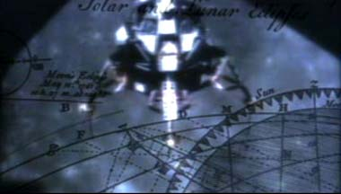
Seguindo no tema Lua, vemos o mdulo lunar de uma das misses Apollo se preparando para descer superfcie. A imagem foi capturada a partir do mdulo de comando, que permanecia em rbita. A misso se dava da seguinte maneira: dos trs astronautas, dois iam para o mdulo lunar e desciam superfcie. Um deles ficava espera, girando em torno da Lua no mdulo de comando. Na volta, o mdulo lunar voltava a se acoplar ao de comando, e ambos partiam na direo da Terra.
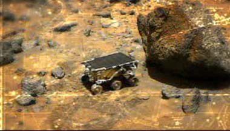
Expandindo seus domnios alm da Lua, vemos a humanidade lanando uma sonda a Marte. Aqui aparece o robozinho Sojourner, parte da misso Mars Pathfinder, que chegou ao planeta vermelho em 1997. Embora no tenha sido nem a primeira, nem a mais cara, essa ainda est fresca na memria dos telespectadores. Durante a misso, o site do JPL (Laboratrio de Propulso a Jato da Nasa) foi acessado ferozmente por entusiastas do mundo todo procura das novas imagens da superfcie marciana.
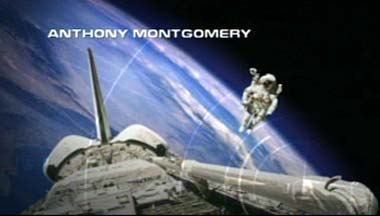
Voltamos rbita terrestre, com um astronauta fazendo uma caminhada espacial sem estar preso a qualquer veculo, mas perto o suficiente do nibus espacial (com sua rea de carga aberta) para que possamos v-lo. Mais uma vez, a cena no faz parte de nenhuma misso.
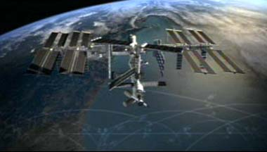
Comeamos finalmente a entrar em nosso futuro, com uma viso do que a ISS (Estao Espacial Internacional) deve ser, uma vez que esteja completada. Originalmente os parceiros do projeto (que inclui EUA, Rssia, Japo, Canad, pases europeus e o Brasil) pretendiam conclu-la em 2006, mas atrasos e estouros no oramento fizeram com que a data escorregasse para 2008. Discretamente, na poro inferior da tela, vemos grficos animados da descrio dos movimentos de projteis. O curso parablico dos projetos foi descrito pela primeira vez pelo cientista italiano Galileu Galilei.
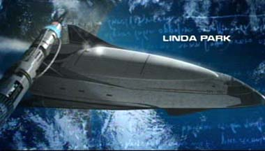
Caminhando mais um pouco rumo ao futuro, vemos um possvel sucessor do nibus espacial americano. A Nasa tem planos para substituir os atuais veculos por outros mais modernos, mais seguros e mais baratos, mas todos os projetos concretos que estavam sendo conduzidos (incluindo o X-33) foram cancelados. A agncia est procura de um novo design.
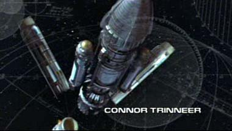
Adentrando finalmente o universo estabelecido de Jornada nas
Estrelas, vemos o lanamento espetacular da primeira nave terrestre com motor de dobra, a Phoenix. Ela foi construda e lanada pelo fsico Zefram Cochrane em 2063.
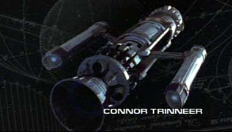
Em outro ngulo, a Phoenix se prepara para o vo histrico. A cena foi feita originalmente para o filme
"Jornada nas Estrelas: Primeiro Contato", mas reaproveitada aqui. Curiosamente, o movimento da cena aqui foi acelerado levemente com relao ao original, para acompanhar o ritmo da edio.
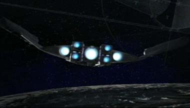
Na mais enigmtica cena da abertura, uma nave terrestre com aparente poder de dobra (a julgar pelas naceles) sobrevoa uma enorme cidade estabelecida sobre a superfcie lunar. Numa reportagem da revista "Star Trek Magazine", a nave descrita simplesmente como um veculo de transporte lunar, mas alguns fs especulam que essa possa ser a SS Valiant, nave mencionada pelo episdio clssico
"Where No Man Has Gone
Before" que deve ter sido lanada em 2065, apenas dois anos aps o vo inaugural de Cochrane. Nenhum episdio at agora estabeleceu a verdade sobre o misterioso veculo.
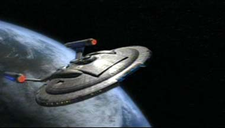
Finalmente, aps a epopia humana rumo ao espao, vemos a Enterprise (NX-01) deixando a rbita terrestre, em 2151...
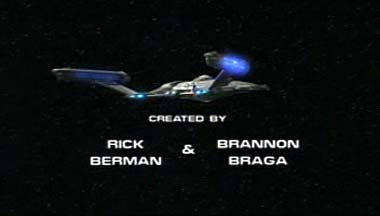
E partindo para o espao desconhecido, que aos poucos mapeado pela equipe de roteiristas escalada pelos criadores Rick Berman e Brannon
Braga.
Salvador
Nogueira, jornalista, escreve regularmente
sobre
a nova srie de Jornada nas Estrelas para o Trek
Brasilis
|